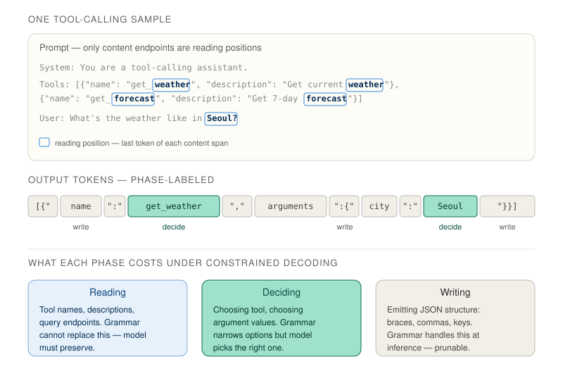
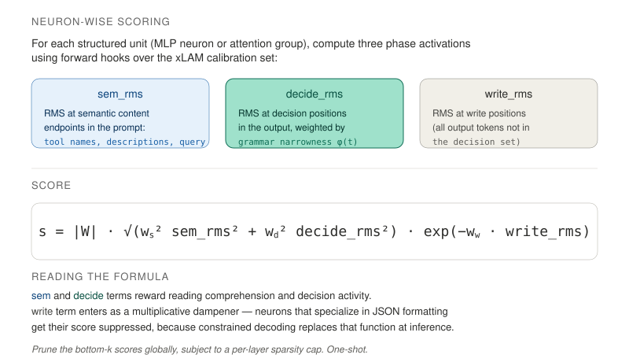
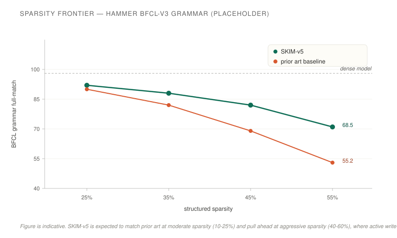

A structured pruning method for LLM agents deployed under constrained decoding — where the grammar handles formatting, so the model needn't.
TL;DR. Tool-calling LLMs deployed with xgrammar spend inference capacity on structural tokens the grammar will emit regardless. SKIM identifies and removes that capacity, keeping only what the grammar cannot replace: reading the prompt and deciding what to emit at branch points. At aggressive structured sparsity, SKIM retains more tool-calling accuracy than prior pruning methods that treat all output tokens equally.
A tool-calling model deployed with grammar-constrained decoding does not generate output one token at a time in the usual sense. At each step, the grammar restricts the set of legal next tokens to whatever the tool schema allows. Most of the time, this restriction is tight — only one token is legal — and the model's logits are not consulted at all. Only at a few positions per output does the grammar actually ask the model to decide, and those positions are precisely the ones that carry task information: which tool, which argument value.
This creates a useful asymmetry. Any neuron in the model that specializes in emitting JSON scaffolding — curly braces, commas, quotes, parameter keys — is doing work the grammar will do for free at deployment. From the compression perspective, these neurons are redundant capacity. Removing them should not hurt downstream quality, because their function is replaced by the constrained decoder.

For each structured unit in the model — every MLP neuron and every attention KV group — SKIM collects activation statistics over the xLAM calibration set, separated by phase. A unit's sem_rms measures how much it activates at semantic content endpoints in the prompt (tool names, descriptions, user query). Its decide_rms measures activation at decision positions in the output, weighted by grammar narrowness. Its write_rms measures activation at the remaining output tokens — the JSON scaffolding.
The pruning score combines these three contrastively:
The first two terms reward units active during reading and deciding. The third term is a multiplicative dampener: units that activate heavily at write positions get their score suppressed exponentially. This operationalizes the thesis. Neurons that primarily write are not merely unrewarded — they are actively demoted, because xgrammar will replace their function at inference.

After scoring, SKIM applies a one-shot structured prune: globally rank all units across all layers, remove the bottom-k to hit the sparsity target, and zero the corresponding weight blocks. A per-layer sparsity cap prevents any single layer from being disproportionately affected. Removed-unit mean contributions are folded into downstream biases (FLAP-style compensation) to preserve expected activations.
We evaluate SKIM on two tool-calling models (Hammer-7B and Qwen2.5-3B) across two benchmarks (BFCL-v3 and API-Bank L1), at structured sparsities from 25% to 55%. All numbers are full-match accuracy under grammar-constrained decoding. Recovery uses the same three-term KD recipe across all pruning methods, trained on 2048 xLAM samples for two epochs.
| Method | Model | Benchmark | Pre-KD | Post-KD |
|---|---|---|---|---|
| Prior baseline | Hammer-7B | BFCL-v3 | XX.X | XX.X |
| SKIM (ours) | Hammer-7B | BFCL-v3 | XX.X | XX.X |
| Prior baseline | Hammer-7B | API-Bank L1 | XX.X | XX.X |
| SKIM (ours) | Hammer-7B | API-Bank L1 | XX.X | XX.X |
| Prior baseline | Qwen2.5-3B | BFCL-v3 | XX.X | XX.X |
| SKIM (ours) | Qwen2.5-3B | BFCL-v3 | XX.X | XX.X |
At moderate sparsity, SKIM and the baseline are close — there is enough remaining capacity that mask choices matter less. As sparsity increases, SKIM's advantage widens. This is exactly the regime where active write-penalization pays off: every retained unit counts, and SKIM spends its budget on the phases xgrammar cannot replace.

Two design choices distinguish SKIM from prior structured pruners. First, the reading signal comes from semantic content endpoints in the prompt — the last tokens of tool names, descriptions, and the user query — rather than averaging activation across the whole prompt. Prompt tokens are dominated by chat template scaffolding and JSON schema syntax; averaging over them dilutes the comprehension signal. Endpoint positions are higher signal-to-noise per measurement.
Second, the write term is contrastive. Most importance-based pruning methods reward high activation everywhere. SKIM explicitly penalizes high write activation, because the SKIM thesis holds that such activation is redundant under constrained decoding. Together these changes make the scoring formula align with what grammar- constrained deployment actually requires from the model.
SKIM assumes deployment under grammar-constrained decoding. For free-form tool generation — or for tool-calling models expected to produce prose reasoning alongside JSON — the write-penalty assumption does not hold and the method should not be used as-is. The method also inherits calibration sensitivity common to all activation-based pruners: pruning with xLAM calibration and deploying on a very different tool distribution can underperform, and we recommend calibration data matched to deployment distribution.
Finally, the scoring formula is one-shot — SKIM prunes once based on initial activation statistics. Iterative or progressive pruning schedules, where the scorer is recomputed after partial removal, are a natural extension but outside the scope of this work.